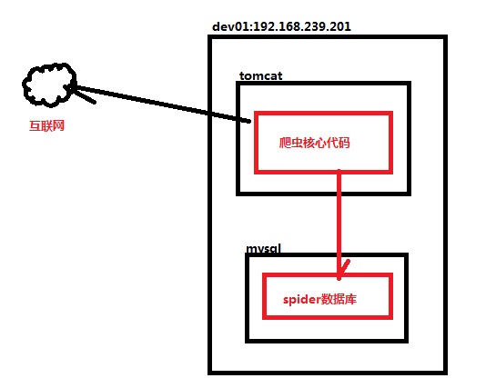
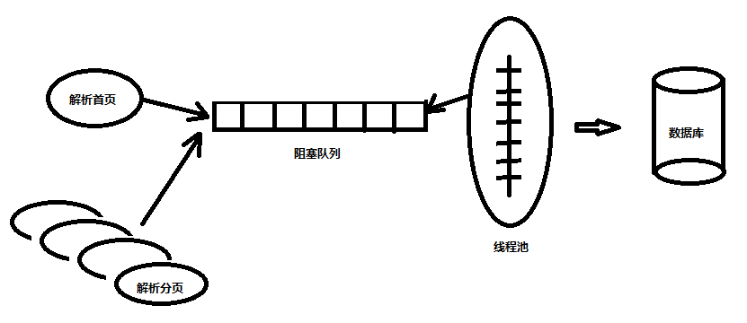
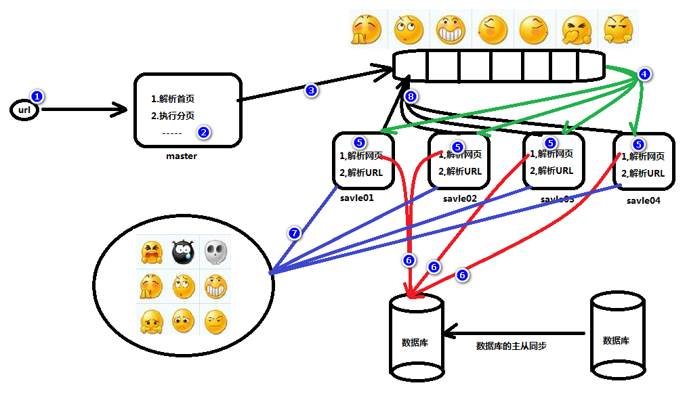

yum install -y mysql-server
service mysqld start
DROP TABLE IF EXISTS `huxiu_article`;
CREATE TABLE `huxiu_article` (
`id` varchar(250) DEFAULT NULL,
`title` varchar(250) DEFAULT NULL,
`author` varchar(250) DEFAULT NULL,
`createTime` varchar(250) DEFAULT NULL,
`zan` varchar(250) DEFAULT NULL,
`pl` varchar(250) DEFAULT NULL,
`sc` varchar(250) DEFAULT NULL,
`content` blob,
`url` varchar(250) DEFAULT NULL
) ENGINE=InnoDB DEFAULT CHARSET=utf8;
修改数据库链接信息
public class ArticleDao extends JdbcTemplate {
public ArticleDao() {
// 创建C3P0的datasource 1.配置 2.代码
ComboPooledDataSource dataSource = new ComboPooledDataSource();
// 1.url
dataSource.setJdbcUrl("jdbc:mysql://localhost:3306/spider?characterEncoding=utf-8");
// 2.driver 不需要
// 3.username&password
dataSource.setUser("root");
dataSource.setPassword("root");
setDataSource(dataSource);
}
}
<build>
<plugins>
<plugin>
<artifactId>maven-assembly-plugin</artifactId>
<configuration>
<archive>
<manifest>
<mainClass>huxiuSpider.HuxiuSpider</mainClass>
</manifest>
</archive>
<descriptorRefs>
<descriptorRef>jar-with-dependencies</descriptorRef>
</descriptorRefs>
</configuration>
</plugin>
</plugins>
</build>
基本命令
运行 java 包
java -jar xxx.jar
解决错误 Access denied for user 'root'@'localhost' (using password: YES)
java.sql.SQLException: Access denied for user 'root'@'localhost' (using password: YES)
at com.mysql.jdbc.SQLError.createSQLException(SQLError.java:964)
at com.mysql.jdbc.MysqlIO.checkErrorPacket(MysqlIO.java:3973)
at com.mysql.jdbc.MysqlIO.checkErrorPacket(MysqlIO.java:3909)
at com.mysql.jdbc.MysqlIO.checkErrorPacket(MysqlIO.java:873)
at com.mysql.jdbc.MysqlIO.secureAuth411(MysqlIO.java:4420)
at com.mysql.jdbc.MysqlIO.doHandshake(MysqlIO.java:1278)
at com.mysql.jdbc.ConnectionImpl.coreConnect(ConnectionImpl.java:2205)
at com.mysql.jdbc.ConnectionImpl.connectOneTryOnly(ConnectionImpl.java:2236)
at com.mysql.jdbc.ConnectionImpl.createNewIO(ConnectionImpl.java:2035)
at com.mysql.jdbc.ConnectionImpl.<init>(ConnectionImpl.java:790)
at com.mysql.jdbc.JDBC4Connection.<init>(JDBC4Connection.java:47)
at sun.reflect.GeneratedConstructorAccessor29.newInstance(Unknown Source)
at sun.reflect.DelegatingConstructorAccessorImpl.newInstance(DelegatingConstructorAccessorImpl.java:45)
at java.lang.reflect.Constructor.newInstance(Constructor.java:423)
at com.mysql.jdbc.Util.handleNewInstance(Util.java:425)
at com.mysql.jdbc.ConnectionImpl.getInstance(ConnectionImpl.java:400)
at com.mysql.jdbc.NonRegisteringDriver.connect(NonRegisteringDriver.java:330)
at com.mchange.v2.c3p0.DriverManagerDataSource.getConnection(DriverManagerDataSource.java:134)
at com.mchange.v2.c3p0.WrapperConnectionPoolDataSource.getPooledConnection(WrapperConnectionPoolDataSource.java:182)
at com.mchange.v2.c3p0.WrapperConnectionPoolDataSource.getPooledConnection(WrapperConnectionPoolDataSource.java:171)
at com.mchange.v2.c3p0.impl.C3P0PooledConnectionPool$1PooledConnectionResourcePoolManager.acquireResource(C3P0PooledConnectionPool.java:137)
at com.mchange.v2.resourcepool.BasicResourcePool.doAcquire(BasicResourcePool.java:1014)
at com.mchange.v2.resourcepool.BasicResourcePool.access$800(BasicResourcePool.java:32)
at com.mchange.v2.resourcepool.BasicResourcePool$AcquireTask.run(BasicResourcePool.java:1810)
at com.mchange.v2.async.ThreadPoolAsynchronousRunner$PoolThread.run(ThreadPoolAsynchronousRunner.java:547)
解决错误的方法：
use mysql;
UPDATE user SET Password = PASSWORD('root') WHERE user = 'root';
flush privileges;
-
use mysql;
select Host,user,password from user;
-
grant all privileges on *.* to root@"localhost" identified by "root" with grant option;
flush privileges;
show variables like '%char%';
[mysql]
default-character-set=utf8
service iptables stop
grant all privileges on *.* to root@"192.168.239.2" identified by "root" with grant option;
flush privileges;


见代码